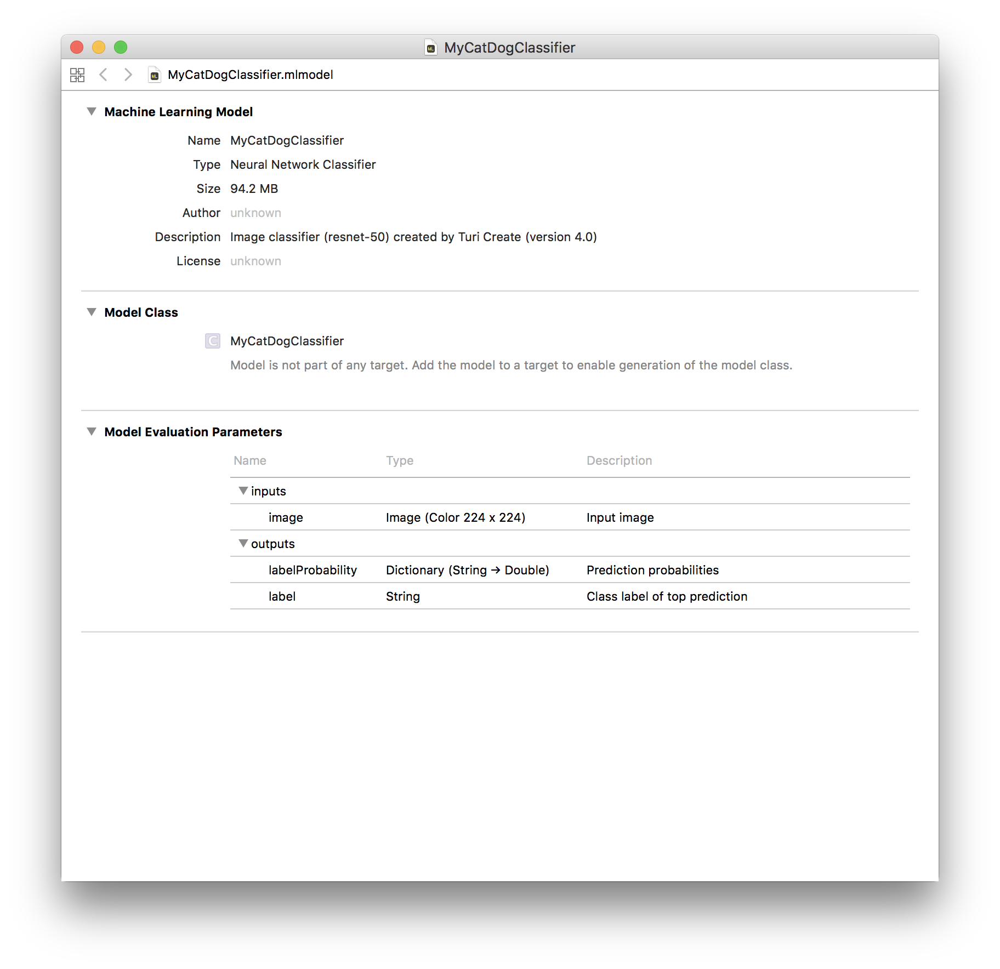

Advanced usage
In this section, we will cover some more advanced options in the image classifier toolkit that let you do more.
Changing Models
The image classifier toolkit is based on a technique known as transfer learning. At a high level, model creation is accomplished by simply removing the output layer of the Deep Neural Network for 1000 categories, and taking the signals that would have been propagating to the output layer and feeding them as features to any classifier for our task.
The advanced options let you select form a set of pre-trained models which can result in a model having various size, performance, and accuracy characteristics.
Using the following option, you can change to use squeezenet which can trade off some accuracy for a smaller model with a lower memory and disk foot-print.
model = tc.image_classifier.create(
train_data, target='label', model='squeezenet_v1.1')Using GPUs
GPUs can be extremely fast for creating an image classifier model. If your machine has an NVIDIA GPU, you can setup a GPU version of Turi Create using the instructions here. Depending on your setup, things can be up to 20x faster using GPUs.
# Use all GPUs (default)
turicreate.config.set_num_gpus(-11)
# Use only 1 GPU
turicreate.config.set_num_gpus(1)
# Use CPU
turicreate.config.set_num_gpus(0)Deploying to Core ML
With the Core ML framework, you can use a machine learning model to
classify input data. Exporting this model in Core ML format can be
performed using the export_coreml function.
model.export_coreml('MyCatDogClassifier.mlmodel')When you open the model in Xcode, it looks like the following:

Through a simple drag and drop process, you can incorporate the model into Xcode. The following Swift code is needed to consume the model in an iOS app.
let model = try VNCoreMLModel(for: MyCustomImageClassifier().model)
let request = VNCoreMLRequest(model: model, completionHandler: { [weak self] request, error in
self?.processClassifications(for: request, error: error)
})
request.imageCropAndScaleOption = .centerCrop
return requestRefer to the Core ML sample application for more details on using image classifiers in Core ML and Vision frameworks for iOS and macOS.